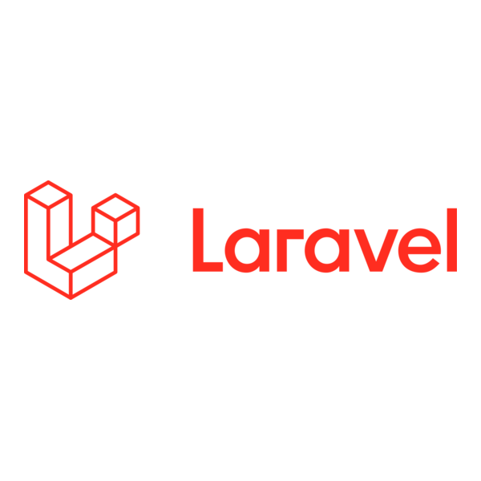
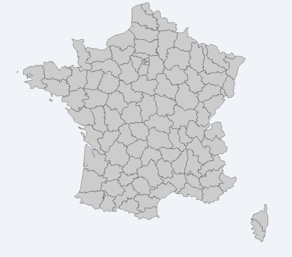
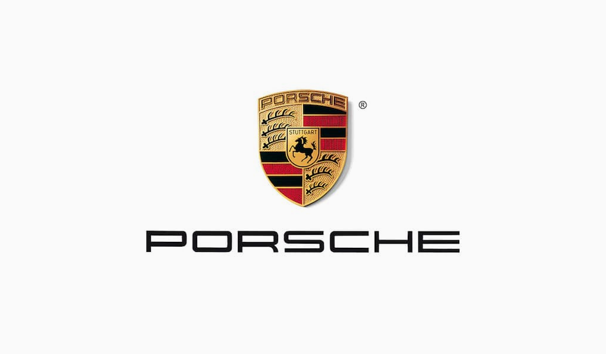

Etudiant en deuxième année de BUT Métiers du
Multimédia et de l'Internet (MMI) au sein de l'IUT de Bobigny au
parcours Developpement Web.
Je recherche une alternance en
développement Full Stack , à compter de
septembre 2026 pour une durée de 12 mois.
Rythme: 1
semaine en entreprise /1semaine en formation.
Le BUT MMI forme aux métiers du numérique à travers trois spécialités : création numérique, stratégie de communication et développement web. Ce parcours m'a permis de maîtriser de nombreux outils techniques et artistiques

LaravelAu cours de ma formation j'ai pu réaliser des projets académiques mais aussi personnels.

Carte SVG interactive des départements français, corrélations climatiques visualisées avec D3.js
Ce projet de Data Visualization consistait à intégrer une carte
interactive en insérant du code SVG directement dans un fichier HTML. L'objectif principal
était de manipuler et de traiter des données provenant d'un fichier CSV à l'aide de
JavaScript.
Grâce à ce développement, j'ai pu établir et visualiser des corrélations entre l'âge des
individus, leur opinion sur le changement climatique et leurs modes de transport. Pour
l'expérience utilisateur, j'ai conçu des animations CSS permettant de mettre en évidence
chaque département au survol et d'afficher des infobulles dynamiques.
Enfin, j'ai utilisé la bibliothèque D3.js pour générer des graphiques complexes et précis
afin d'illustrer les résultats de cette analyse.

Site vitrine abouti dédié à la Porsche Taycan, construit en 3 itérations reflétant ma progression web.
Dans le cadre d'un projet personnel, j'ai développé un site vitrine
dédié à la Porsche Taycan, une voiture qui me passionne depuis plusieurs années.
Ce projet a connu trois itérations successives, témoignant de mon évolution en développement
web. La première version était exploratoire, centrée sur l'expérimentation. La deuxième
était plus structurée, page par page, mais au contenu encore limité. La troisième version
est aboutie, avec un contenu cohérent et une réelle réflexion sur l'expérience
utilisateur.
Pour concrétiser cette dernière version, j'ai mobilisé différentes ressources pour les
animations CSS et le JavaScript. L'essentiel de mon travail s'est concentré sur la
structure, la pertinence du contenu et la qualité de l'expérience utilisateur.
Jeu Motus inspiré de l'univers de Star Wars, développé selon l'architecture MVC.
Dans le cadre de ma formation, j'ai développé une application web
dédiée au jeu Motus, un projet qui m'a permis de lier logique algorithmique et structure
backend.
Ce projet a été conçu selon l'architecture MVC (Modèle-Vue-Contrôleur) en PHP,
témoignant de ma progression dans la structuration d'applications robustes. Les données et
le dictionnaire de mots sont entièrement gérés dynamiquement via un fichier JSON, tandis que
l'interface frontend interagit en temps réel avec l'utilisateur.
Pour concrétiser cette application, j'ai mobilisé différentes ressources pour les
animations CSS (retournement des cases) et la logique JavaScript. L'essentiel de mon travail
s'est concentré sur la rigueur du code, la pertinence de l'architecture et la fluidité de
l'expérience utilisateur.
Application React de gestion de tâches développée en stage chez Enedis, architecture en couches avec useReducer et persistance localStorage.
Dans le cadre de mon stage chez Enedis, j'ai développé une
application web de gestion de tâches, un projet qui m'a permis de découvrir React et
TypeScript dans un contexte professionnel réel. N'ayant jamais pratiqué React avant ce
stage, j'ai dû monter rapidement en compétences pour comprendre et contribuer à une base
de code existante, construite par un développeur expérimenté de l'entreprise.
L'application suit une architecture en couches séparant clairement le domaine,
l'infrastructure et les composants, ce qui m'a appris l'importance de l'organisation du
code en entreprise. La gestion de l'état est assurée par useReducer, centralisant les
quatre actions dans un reducer unique via un switch : ajout, modification, suppression
et validation des tâches. Les données sont persistées grâce à un hook personnalisé
useLocalStorage, permettant de conserver les tâches après un rechargement de la page.
Ce projet m'a avant tout appris à lire et comprendre du code que je n'ai pas écrit, une
compétence essentielle en entreprise (cette application est toujours en cours de
développement et d'amélioration).